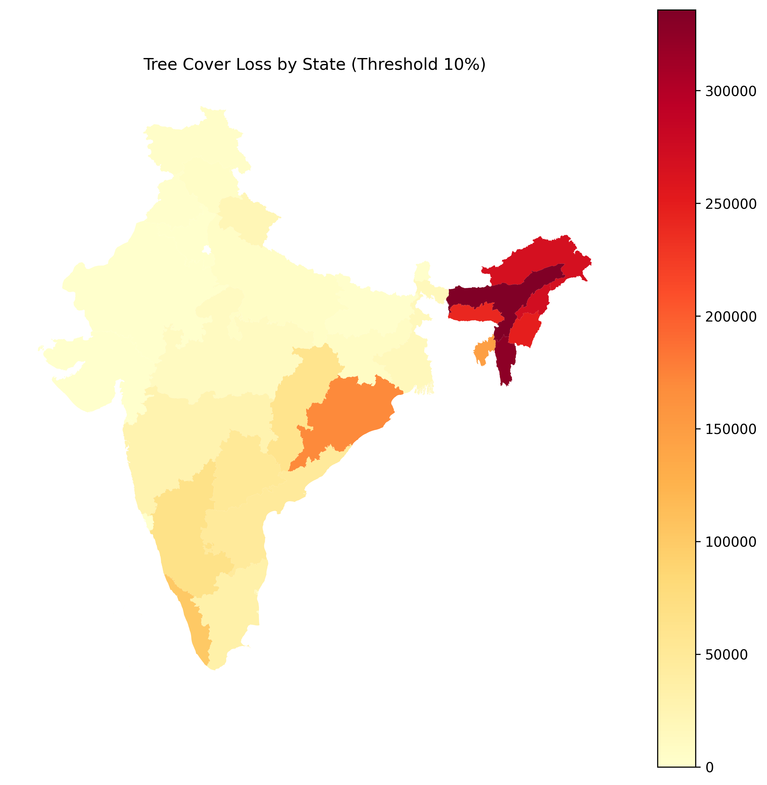
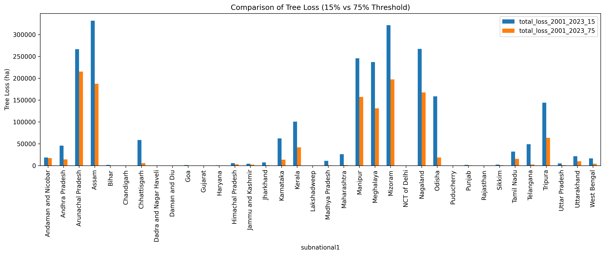
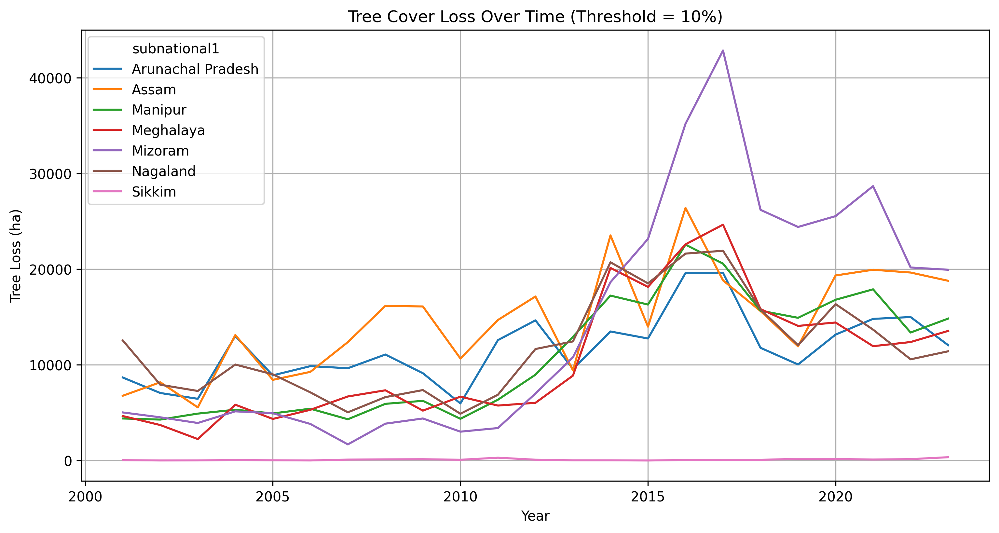
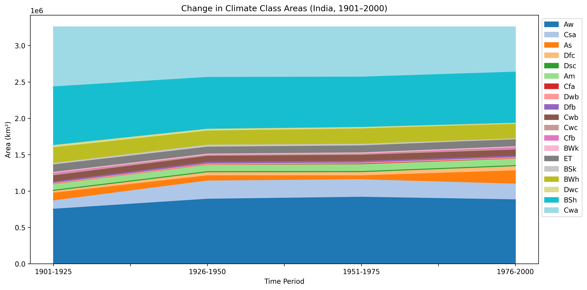
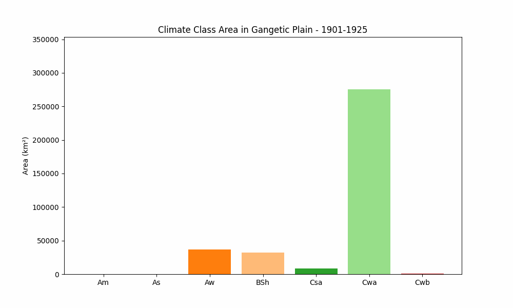

A national-scale geospatial study quantifying tree cover loss and Köppen-Geiger climate classification shifts across India's biodiversity hotspots and biogeographic zones — from 1901 to 2100.
Context
India contains four of the world's 36 biodiversity hotspots — the Himalaya, Indo-Burma, Western Ghats & Sri Lanka, and Sundaland — regions that together hold thousands of endemic species found nowhere else on Earth. Yet these same regions face two mounting, simultaneous pressures: forests being cleared from the ground up, and the climatic conditions that sustain those forests shifting beneath them.
Most analyses treat deforestation and climate change as separate problems. This project asks both questions at once — how much forest have India's biodiversity hotspots lost between 2001 and 2023, and how are the climate identities of those same regions transforming from 1901 to 2100? Together, these two lenses reveal a pattern of ecological pressure that neither dataset alone can show.
"The Indo-Burma hotspot faces the worst combination — highest tree cover loss and a near-complete replacement of its dominant climate zone by 2100."
Analytical Framework
Key methodological choice: Spatial intersections used
gpd.overlay(..., how='intersection') rather than a spatial
join — ensuring hotspot areas were clipped precisely to India's boundary
rather than including geometry that spills across neighbouring countries.
All area calculations were performed after reprojecting to an equal-area
CRS (EPSG:6933) for accuracy.
Data Sources
Forest Loss
Annual tree cover loss CSV, 2001–2023, at 7 canopy thresholds (0%–75%). Subnational state-level units for India.
Climate Classification
Historical (1901–2000) and projected (2001–2100) climate zone polygons under A1FI and B1 scenarios. Rubel & Kottek dataset.
Administrative Boundaries
OpenStreetMap vector data. Pre-2019 boundaries — does not reflect Ladakh/J&K reorganisation. Does not affect core analysis.
Ecological Zones
Zenodo / Myers et al. 2000 — global-scale polygons for the four hotspots intersecting India. Clipped to Indian territory.
Ecological Zones
Wildlife Institute of India — 10 biogeographic zones used for climate zone disaggregation and regional comparison.
Reference Layer
National Parks and Wildlife Sanctuaries polygons — used to assess protected area density within each biodiversity hotspot.
Analysis — Part 1
Of Arunachal Pradesh's total forest loss came from dense forest (≥75% canopy) — meaning core, ecologically irreplaceable habitat is being destroyed, not just forest edges.
Cumulative forest loss in Mizoram by 2023 relative to its year-2000 baseline — the highest among Northeastern states, driven by a surge between 2011 and 2017.
Highest cumulative and annual tree loss of all four hotspots, dominated by Mizoram, Nagaland, Tripura, and Manipur. Under the greatest anthropogenic pressure.
Consistently lowest tree loss despite similar terrain. Strict regulations, a non-bailable offense for illegal felling, and citizen programs like "Ten Minutes to Earth" make the difference.
On canopy thresholds: The 10% threshold aligns with India's Forest Survey of India (FSI) definition and captures all forest types including open woodlands. The 75% threshold isolates dense, ecologically rich forest cores. Comparing both reveals not just how much forest is lost, but what quality of forest — a critical distinction for biodiversity assessment.
Interactive maps and animated charts. Pan, zoom, and hover to explore.
Interactive Folium maps — zoom and hover for regional detail
Figure 1 — Biodiversity Hotspots & Protected Areas
Folium map showing the four biodiversity hotspots and India's protected area network (national parks and wildlife sanctuaries). The Western Ghats leads with 13.67% protected area density; Indo-Burma trails at under 3%.
Figure 2 — % Tree Cover Loss in Biodiversity Hotspot States (10% Threshold)
Choropleth map of percentage tree cover loss (2001–2023) at the 10% canopy threshold across biodiversity hotspot states. Darker shades indicate greater proportional loss. Hover over states for exact figures.
Plotly animations — press play to view year-by-year progression
Figure 3 — Annual Tree Cover Loss per Biodiversity Hotspot (2001–2023)
Year-by-year tree cover loss (hectares) across India's four biodiversity hotspots. Indo-Burma dominates consistently. Note the regional surge in 2016–2018 visible across all hotspots.
Figure 4 — Annual Tree Cover Loss by State (Hotspot States)
State-level animated view. Watch how Mizoram's loss spikes sharply around 2017 before declining — coinciding with the timeline of the State Action Plan on Climate Change (SAPCC).
Figure 5 — Tree Loss by State (10% Canopy Threshold)

State-wise total tree cover loss at the 10% threshold (2001–2023). Northeast states dominate — Assam leads at ~331,646 ha total loss, followed by Mizoram and Arunachal Pradesh.
Figure 6 — Dense vs Sparse Forest Loss: 15% vs 75% Threshold

Comparing loss at 15% (includes open woodlands) vs 75% (dense forest cores) reveals the quality of deforestation. Arunachal Pradesh loses 80.9% of its 15%-threshold loss from dense forest — a critical conservation signal.
Figure 7 — Temporal Trends in Northeastern States (10% Threshold)

Annual loss trends (2001–2023) for seven Northeastern states. All states peak between 2016–2018. Sikkim's consistently flat line is the clearest evidence that effective policy can interrupt regional deforestation trends.
Analysis — Part 2
Area of humid subtropical climate (Cwa) lost in the Gangetic Plain by 2100 under A1FI — replaced by tropical savanna (Aw). One of India's most populous agricultural belts faces a fundamental climate identity shift.
The Trans-Himalayan subarctic climate class (Dfc) disappears entirely by 2100 under A1FI, replaced by dry-summer variants. Glacier retreat, snow loss, and altitudinal warming are the driving signals.
BSh (hot semi-arid) expansion by 2100 — gaining land from Aw and As. Combined with BWh desert growth, this signals increasing aridity across the Deccan Plateau and western India.
Tropical monsoon climate (Am) retains nearly 100% of its area — concentrated in Western Ghats, Northeast, and Andaman Islands. Ocean-buffered and orographic systems show the greatest climate resilience.
Historical analysis (1901–2000) and future projections (2001–2100) under A1FI and B1 scenarios.
Figure 8 — Climate Class Area Change (1901–2000)

Net area change per Köppen-Geiger climate class across the 20th century. Cwa (humid subtropical) lost the most — over 202,000 km² — while Aw (tropical savanna) gained 129,000 km². A baseline shift that preceded the high-emission era.
Figure 9 — Climate Zone Animation: Gangetic Plain (1901–2100)

Animated bar chart showing how each climate class' area in the Gangetic Plain evolves from 1901 to 2100. The collapse of Cwa and rise of Aw is the dominant signal — a region feeding hundreds of millions transitioning toward savanna conditions.
Key Insight
Viewing both analyses together reveals a pattern that neither alone could show. India's biodiversity hotspots are not just losing forest cover — they are simultaneously losing the climatic conditions that allowed those forests to exist.
Leads in both cumulative tree cover loss and climate zone replacement. Cwa collapses by ~57,000 km² while deforestation rates remain the highest of all hotspots. These pressures reinforce each other — cleared land absorbs more heat, accelerating local climate shifts.
Moderate forest loss but dramatic altitudinal climate zone shifts. Dfc disappears entirely; Cwb transitions toward Cwa at elevation. The ecological risk here is habitat compression — species adapted to cold zones have nowhere to migrate upward.
Am climate zone shows the highest retention (~100%). Forest loss is present but lower than Northeast states. However, measurable Aw expansion toward the end of century signals that stability is conditional — not guaranteed under continued high emissions.
"Sikkim's resilience — low forest loss despite being surrounded by high-loss states — is the clearest evidence in this dataset that policy intervention can interrupt even regional deforestation trends."
Policy Relevance
Climate zone transition matrices provide spatially grounded evidence for adaptation planning. Identifies where climate regimes are shifting fastest.
Direct quantification of forest loss in biodiversity hotspots. Identifies conservation gaps — Indo-Burma hotspot protected area coverage under 3%.
Forest loss in the Gangetic Plain and Himalaya directly threatens watershed regulation for river systems supplying hundreds of millions of people.
The Cwa → Aw climate shift in the Gangetic Plain has direct implications for agricultural suitability in India's primary food-producing belt.
Tracks climate-driven land cover shifts near urban hotspots — relevant for climate-resilient urban planning in rapidly expanding cities.
Tools & Techniques